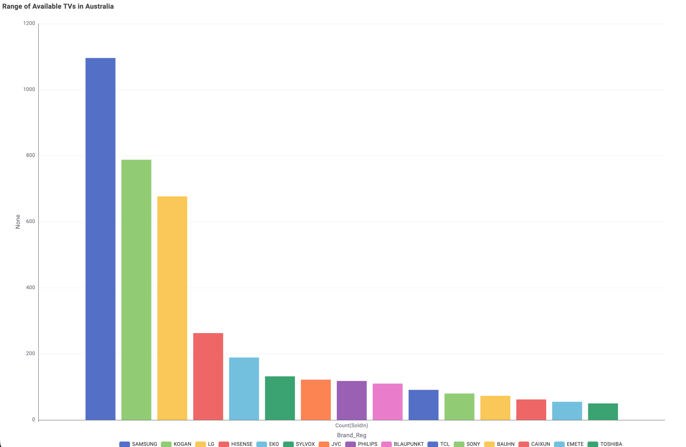
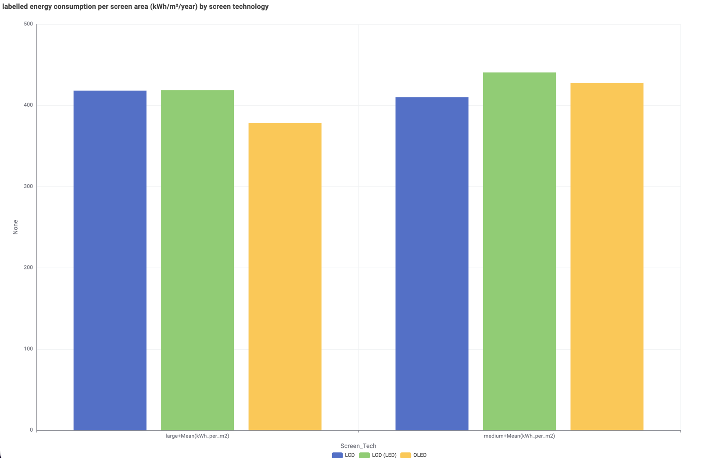
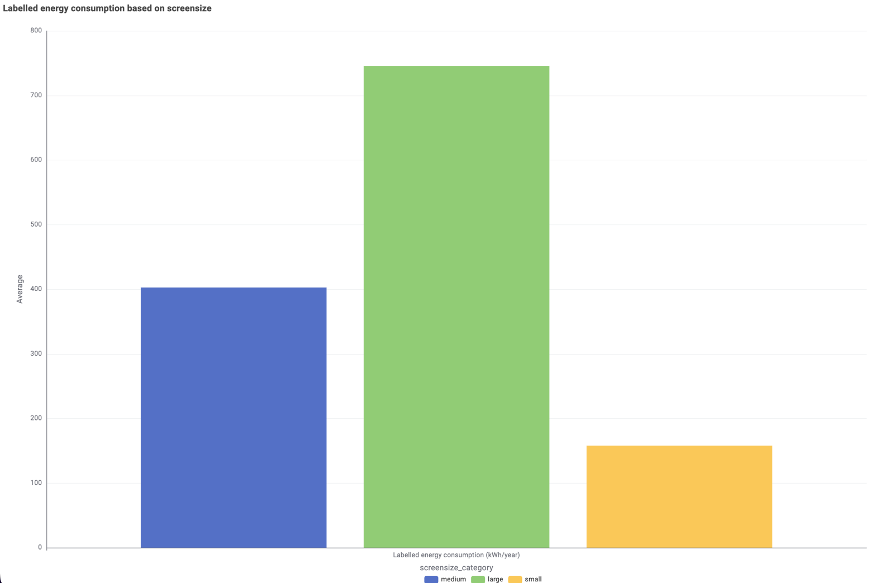
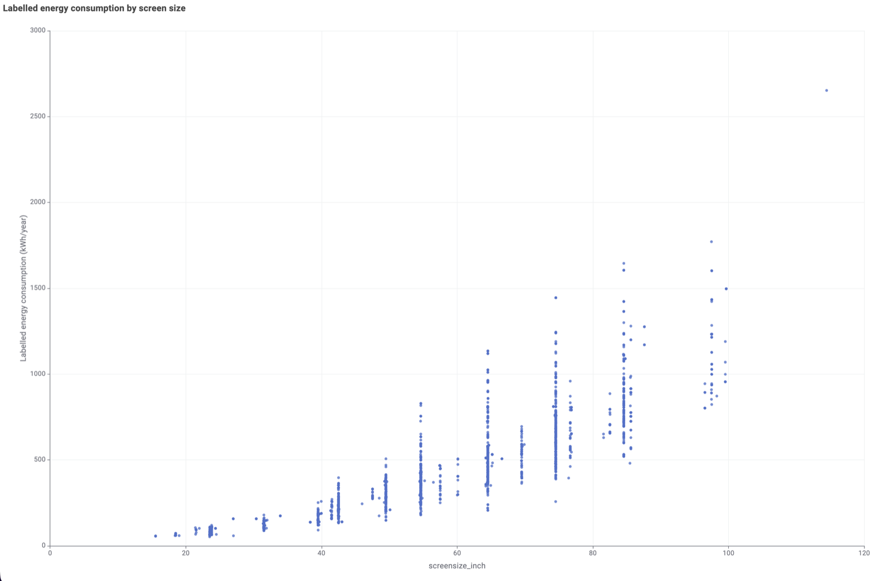

COS30045 Unit Demonstration · Stage 02 Televisions
Television Energy Consumption
Televisions are among the most frequently used appliances in Australian homes. Screen technology, size, resolution and brightness settings influence total power draw and annual running costs.
SAMPLE DATA · TV MODELS
Market dominance55–65 inches
Average Australian TV screen size
+12% diagonal growth since 2018
Household runtime3.2 hours / day
Average daily active viewing time
Peak operation: 18:00–22:30 AEST
Operational cost$35–$115 AUD
Estimated annual running cost range
Modelled at 32.0c/kWh benchmark
Common Television Categories
Comparative analysis across standard consumer panel classifications.
4 REFERENCE TIERS
Compact / Secondary
32" LED HD Bedroom TV
Standard LED LCD
Power draw: 45 W
Daily use: 2.5 hrs/day
Annual energy: 41 kWh/yr
Annual running ~$13.15
Standard Living
55" 4K UHD LED Smart TV
Direct LED LCD
Power draw: 95 W
Daily use: 4.0 hrs/day
Annual energy: 139 kWh/yr
Annual running ~$44.40
High Brightness
65" 4K QLED Premium TV
Quantum Dot LED
Power draw: 145 W
Daily use: 4.0 hrs/day
Annual energy: 212 kWh/yr
Annual running ~$67.80
High Contrast Flagship
65" 4K OLED Cinema TV
Organic Light Emitting Diode
Power draw: 180 W
Daily use: 4.0 hrs/day
Annual energy: 263 kWh/yr
Annual running ~$84.10
Comprehensive Model Comparison
Displaying five illustrative sample television models.
CSV READYD3 SCHEMA COMPATIBLE
Model description
Display tech
Size
On-mode
Standby
Stars
Est. cost / yr
Sony Bravia KD-32W830K
HDR Entry Series
Standard LED LCD
32" (80cm)
42.0 W
0.45 W
★ 5.5
$12.30
Hisense 50A7KAU
Mid-range Smart UHD
Direct LED LCD
50" (127cm)
88.0 W
0.50 W
★ 5.0
$41.10
TCL 55C745
144Hz Gaming Edition
QLED Mini-LED
55" (139cm)
118.0 W
0.40 W
★ 4.5
$55.20
Samsung QN65QN85C
Neo QLED Matrix
Neo QLED LCD
65" (165cm)
152.0 W
0.50 W
★ 4.5
$71.10
LG OLED65C3PSC
Cinema Self-lit Pixels
OLED Self-Lit
65" (165cm)
178.0 W
0.50 W
★ 4.0
$83.25
Assumes 4.0 hrs daily operation + 20 hrs standby at 32c/kWh.Illustrative sample data for learning purposes
What the dataset shows
Charts from the Australian TV registration data
Four KNIME charts built from the same extract, with the key reading under each.

Brand range: Samsung lists the most available models
Top 15 brands by number of TV models listed as available in Australia, with Samsung variants combined. These are model counts, not units sold.

Per square metre, the technologies are close
Dividing by screen area removes most of the size effect. Within each size band the gaps are roughly 10% or less, and the order changes between bands.

Bigger screens use far more energy
Average labelled consumption by screen size category. Size explains most of the difference, which is why raw kWh comparisons between technologies can mislead.

Energy rises with screen size, with one outlier
Each point is one model in the extract, across all countries. The trend is roughly linear. The outlier is a 115-inch TCL (115X955 Max) at 2,652 kWh per year, far above the rest.
Interactive client-side tool
Appliance Energy Calculator
Calculate the running cost of any household appliance.